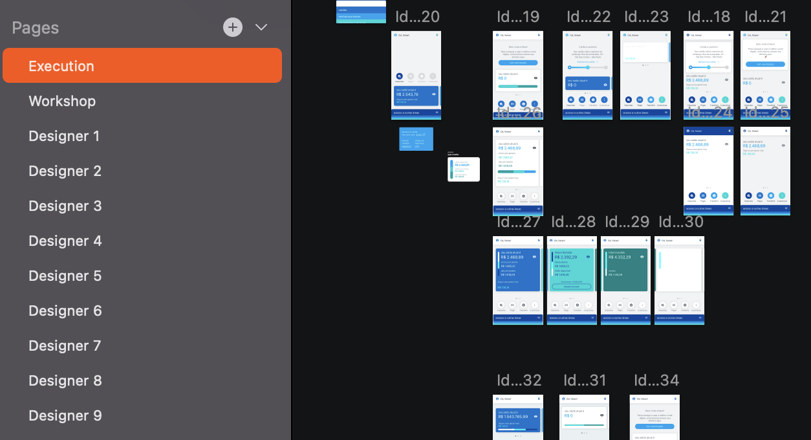
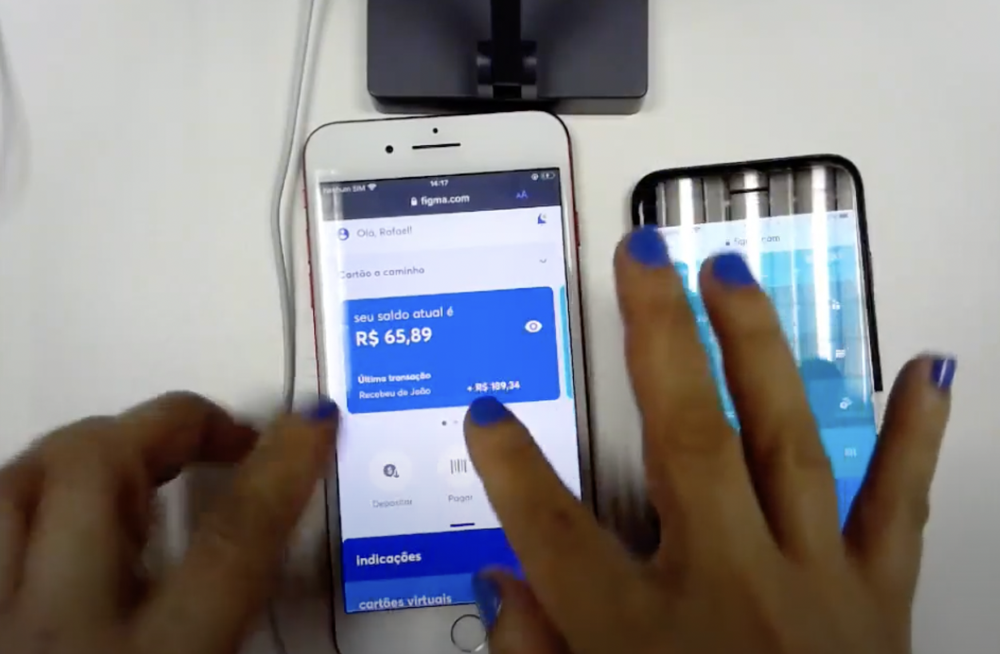

UX/UI
Dashboard Redesign
Neon Pagamentos
Duration
January 2020 - May 2020
People
4 Project Managers, and 9 Product Designers.
Role
Product Designer Jr.
Skills
Design Critique, User Interview, User Testing, Figma, Sketch, Abstract.
Project Overview
Neon is a Brazilian Series D startup that offers financial services through a mobile app. Working there from 2019 to 2022, I collaborated on a variety of projects, from designing chapter-driven initiatives to designing new features for the final user.
The Neon app’s dashboard is the first place the user will find by opening the app , and the Head Design department envisioned the necessity to accommodate and organize more features while keeping the dashboard’s design scalable. I was called to work on this project, and I’ll detail everything I’ve done below.
Problem Statement
How to redesign an existing dashboard to make it more scalable for business needs, and also improve its usability for the users without losing the branding aspects?
Summary
Research
- Current dashboard performance
Ideation
- Peers collaboration
- More sketches
- Prototyping
Testing
- User testing
- Results
Takeaways
- Complexity is challenging
- Not implemented, but still valid
- In-person testing can be biased
Research
What was known
Users had different preferences regarding the order of services (features) they preferred. For example, some users preferred to see their transactions first, but others wanted to see their credit card information. To know the best hierarchy of Neon’s services, the team needed to gather in-depth access data, which was not feasible then.
The services names (Transactions, Credit, Investments, etc.) were not intuitive, even supported with icons.
The team had the hypothesis that users loved the current dashboard, which was a big list of buttons with the branding Neon colours, but most users were neutral and didn’t show strong opinions about it.
Ideation
Peers Collaboration
The designer at the time (Rafael Nunes) facilitated a Crazy Eight workshop, where product managers and product designers from different squads (related to Neon’s different services) sketched solutions for the redesign.

Eventually, Rafael needed to hand the Dashboard project over to me, and then I started my contribution to the project by gathering all the sketches and doing a critique session with all the Product Design team (around 15 people at the time), and picking the best solutions for the following requirements:
- Must be scalable
Certainly, Neon would grow and offer new services, and it was important that the new dashboard could bear more and more features in an organized and meaningful way. - Must have the branding colours
Although the previous interviews with users didn’t show any strong feelings toward the current dashboard, the team and I understood that the colours would be the unique touch for the dashboard. - Must follow all the usability heuristics
Although the time was short, all the fancy solutions that were lacking in the usability rules were discarded.
I clustered all the positive, negative and neutral feedback to focus on what worked on the peers’ collaboration and colour-coded it to have a better visualization.
Prototyping
I designed the prototype on Figma for the user testing session, and these were the goals:
- The user navigates fluidly and understands all the screens.
- The user accesses the card information above the cards.
- The user can go to the “Credit” section.
User Testing
For the user interviews, I paired with Silvia Nogueira, the researcher who assisted me with the interviewing and testing process. Five people were recruited to be interviewed and do the user testing. Three of them were Neon clients and two of them were non-clients.

In the image above, the user is testing the new dashboard (on their left hand) and comparing it with the current one (on their right hand).
Results
The redesign did well through the testing, where the majority of users considered the interface easier to accomplish a task. Moreover, most of the users said that the new dashboard looked more organized when compared with the previous one, and all the cards, accordion, and menu drawer were tapped, dragged, and explored, which validated their affordance.
Takeaways
Complexity is challenging
During the ideation process, I found myself with tons of responsibility on my back since I was designing a big and impactful product. Every decision could change the company’s ecosystem because I was deciding what feature comes first and what would be the last to appear, and each squad in Neon organization was feature-related. Although I was at a Junior-Intermediate level, I could manage the pressure thanks to my amazing leadership and all the team who trusted in my potential to work on the most important product.
Not implemented, but still valid
The project scope was too big for Neon’s design system maturity at the time. It was March 2020 when the user testing was finished, and after that, I worked on polishing some components and started to study how we could release this amount of changes in small parts, coding every component and blending it on the current dashboard. However, I was called to work on more urgent projects and the implementation never happened.
Neon changed its dashboard only in February 2023, three years after I started the study, and I’m sure the work I started has been a powerful seed for Neon app growth.
In-person testing can be biased
Right before the pandemic hit the city where I used to live and work, we did a card sorting and a user testing session in the office. The card sorting session was valid for practicing, but we did it with some employees of another department instead of doing it with real users. On the other hand, the user testing was done with real users and potential clients, and although it’s a great and valid starting point, I noticed that inviting people to the office could bias the results. Neon’s office was a great place to work and everywhere was very cozy and filled with branding colours. It wasn’t only inviting and welcoming for the employees, but also for the people who didn’t work there, like the users we invited. I feel that they might felt pressured, and this might have compromised the honesty of their feedback.